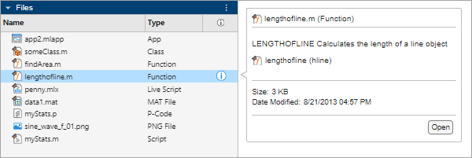

Manage Files and Folders
This table shows how to create, open, move, and rename files and folders on local and
network drives from the toolstrip and the Files panel. To open the Files panel, click
the Files icon  in the sidebar. If you have MATLAB Connector installed on your system, you also can access files
and folders in your MATLAB®
Drive™ from MATLAB.
in the sidebar. If you have MATLAB Connector installed on your system, you also can access files
and folders in your MATLAB®
Drive™ from MATLAB.
| Action | Tools Workflow | Function Alternative |
|---|---|---|
| Create a new folder | In the Files panel, right-click in white space, and then select New > Folder. Alternatively, on the Home tab, select New > Folder. MATLAB creates and selects a folder named | Use the mkdir('parentFolder','newdir'); |
| Move a file or folder | In the Files panel click and drag the item. You cannot move a folder while it is on the search path. | Use the movefile('myfile.m','d:/work'); |
| Rename a file or folder | In the Files panel, right-click the item and select Rename. Alternatively, press F2. On macOS press Enter instead. File names must start with a letter, and can contain letters, digits, or underscores. | Use the movefile('myfile.m','oldfile.m'); |
| Open a file in MATLAB | On the Home tab, in the
File section, click
Open
You also can double-click the file in the Files panel or select the file and press Enter. On macOS, press Command+Down Arrow instead. To open a file in the Editor as a text file, even if the file type is associated with another application or tool, in the File section, click Open > Open as Text. | Use the |
| Open a file in another program | In the Files panel, right-click the file and select Open Outside MATLAB. The file opens in the application or tool that the operating system associates with the file type. | |
| Reopen a recently opened file | On the Home tab, in the
File section, click
Open
| none |
| Reopen last closed file | On the Home tab, in the File section, click Open > Reopen Last Closed File. Alternatively, press Ctrl+Shift+T. | none |
| Preview file contents without opening the file | In the Files panel, right-click the file and select Preview. You also can click the Preview button to the right of the file or folder name.  | none |
| Preview contents of Markdown file | When you open a Markdown file in MATLAB, the Editor shows a preview of the file to the right of the Markdown file. As you make edits to the file, the Editor updates the preview. To close the preview, go to the View tab and in the Preview section, click the Markdown button off. In the preview, Markdown and MATLAB code appears with syntax highlighting. The Editor does not render images from external web pages in the preview. | none |
| Delete a file or folder | In the Files panel, select the file or folder and press Delete. By default, MATLAB deletes or recycles files and folders according to your operating system settings. To permanently remove the selection when the system setting is set to recycle, press Shift+Delete. On Linux® systems, you can request that MATLAB move deleted files to a temporary folder. On the Home tab, in the Environment section, click Settings. Select MATLAB > General and modify the Deleting files setting. | To delete a file, use the delete('myfile.m');By
default, files are permanently removed. To move deleted files to a
temporary folder instead, use the To
delete a folder, use the |
| View MATLAB Drive recent activity | In the Files panel, right-click any MATLAB Drive file or folder and select MATLAB Drive > View recent activity. | none |
| Open MATLAB Drive online | In the Files panel, right-click any MATLAB Drive file or folder and select MATLAB Drive > Go to MATLAB Drive Online. | none |
Manage Files and Folders in MATLAB Online
MATLAB Online™ provides access to MATLAB from a standard web browser. In MATLAB Online, you only have access to the files and folders in your MATLAB Drive, and some file actions are not supported.
For more information about how to access files in MATLAB Online, see Access Files in MATLAB Online.
See Also
edit | mkdir | open | movefile | rmdir | delete | recycle